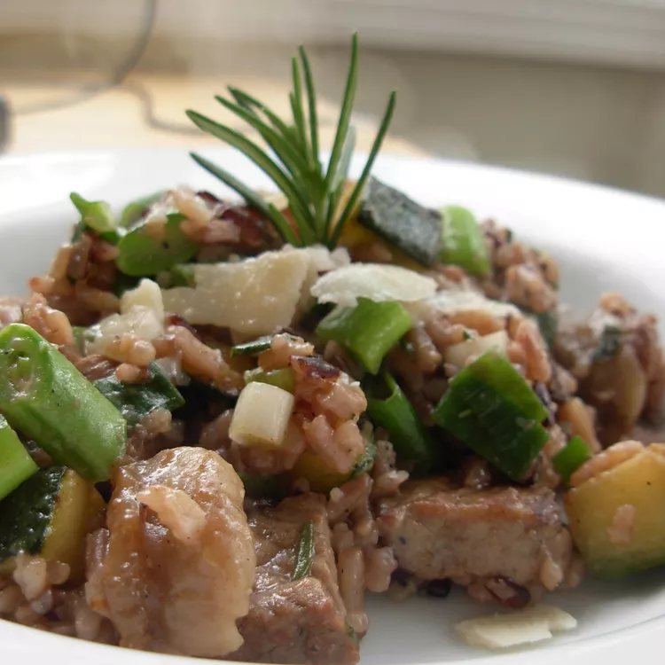

Zuccini

Description
This is a yummy rice skillet with pork chop, zucchini, and Parmesan cheese. You don't need a lot of oil for this recipe - chicken broth does the trick.
ingredients
- 1 cup uncooked white rice
- 3 cups chicken broth, divided
- 1 tablespoon olive oil
- 1 pork chop, diced
steps
- Combine 2 cups of chicken broth and brown rice in a saucepan over medium heat and bring to a boil. Reduce heat to medium-low, cover, and simmer until rice is tender and liquid has been absorbed, about 20 minutes.
- Meanwhile, heat olive oil in a deep skillet over medium heat and cook pork until browned on all sides, about 5 minutes. Add zucchini and cook for 3 minutes. Add 1 cup chicken broth and simmer until zucchini are soft, about 5 minutes. Add rice. Mix in green onions, rosemary, and Parmesan cheese and cook until well combined, 1 to 2 minutes. Season with salt and pepper.